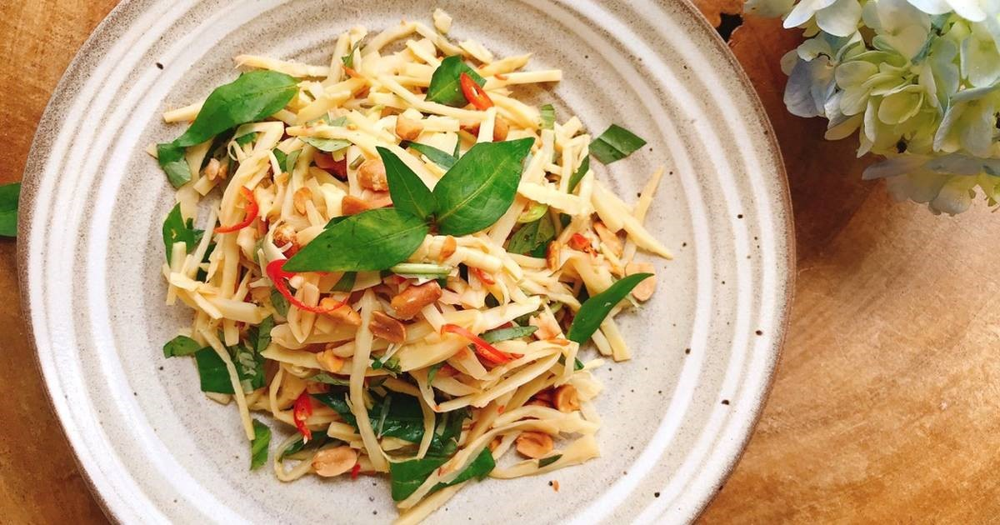

CHƯƠNG 5: MÓN DINH DƯỠNG
1. CƠM TẤM BÌ CHAY
“Cơm tấm bì chay” hấp dẫn với những hạt tấm nở xốp, thơm ngon, một món ăn dễ thực hiện nhưng mang lại giá trị dinh dưỡng cao.
Chuẩn bị: 15 phút
Thực hiện: 15 phút
Khẩu phần: 4 người
Nguyên Liệu
• 1/2 kg gạo tấm
• 2 củ khoai lang bí
• 1 củ sắn nước
• 1 cây boa rô
• 2 quả dưa leo
• 2 cây ngò rí
• 1 bìa đậu phụ trắng
• 100g chả lụa chay
• 50g bún tàu
• 2 thìa súp bột thính
• Gia vị: Muối, đường, Hạt nêm Knorr từ Nấm và Rong Biển, dầu ăn
• Pha nước mắm chay: 100g cà rốt trụng qua nước sôi + 1 chén nước dừa xiêm + 1 thìa súp nước tương+2 thìa súp đường + 1 thìa cà phê Hạt nêm Knorr từ Nấm và Rong Biển + 2 thìa súp nước cốt chanh +1 thìa cà phê ớt băm. Nấu sôi nước dừa xiêm, đường, nước tương, Hạt nêm Knorr từ Nấm và Rong Biển, để nguội cho nước cốt chanh, cà rốt, ớt băm vào.
Cách nấu
• Gạo tấm nấu vừa ăn.
• Khoai lang bí, củ sắn gọt vỏ, bào mỏng, cắt sợi. Hành boa rô cắt lát mỏng.
• Dưa leo gọt bớt vỏ, bỏ ruột, bào mỏng, trộn dấm, đường và rau húng cắt nhỏ. Bún tàu rửa nhanh tay, cắt ngắn. Bìa đậu phụ trắng, chả lụa chay cắt lát mỏng.
• Cho khoai lang, tàu hũ trắng, 1/2 lượng bún tàu vào chiên vàng, vớt ra để vào giấy thấm dầu.
• Phi thơm hành boa rô, cho củ sắn vào xào trước, sau đó cho bún tàu, khoai lang, đậu phụ chiên vào trộn xào chung, nêm 1 thìa canh Hạt nêm Knorr từ Nấm và Rong Biển, muối, đường vừa ăn rồi trút tất cả ra tô, để nguội, cho chả chay và thính vào trộn đều.
• Dọn cơm ra đĩa kèm với bì chay và dưa leo trộn chua ngọt, dùng với nước mắm chay, có thể dùng kèm sườn nướng chay rất ngon.
2. CUỐN DIẾP CHAY
“Cuốn diếp chay” là một trong những món đặc sản, được xếp vào thực đơn cung đình Huế với các nguyên liệu từ rau củ quả. Thêm vào đó, gia vị Hạt có thành phần từ nấm dịu ngọt và rong biển thanh mát sẽ giúp làm dậy lên hương vị tươi ngọt, thanh mát tự nhiên của món ăn.
Chuẩn bị: 15 phút
Thực hiện: 15 phút
Khẩu phần: 4 người
Nguyên Liệu
• 12 lá cải bẹ xanh (còn gọi là cải cay).
• 2 bìa đậu hủ
• 100g chả chay
• 200g bún tươi
• 3 củ khoai lang luộc
• Bông hẹ
• Gia vị: Hạt nêm Knorr từ Nấm và Rong Biển, đường
• 3 muỗng canh bơ đậu phụng pha với 3 muỗng canh nước lạnh
• 3 muỗng tương ngọt
• 1 muỗng bột năng pha với 3 muỗng nước lạnh
• 2 muỗng mè rang
• 1 muỗng canh ớt đỏ băm
• 1 muỗng canh boa rô băm nhuyễn
Cách nấu
• Bắc chảo dầu nóng, cho đậu hủ đã ướp gia vị vào chiên vàng, vớt ra cho vào giấy thấm dầu, để nguội, cắt từng lát mỏng kích thước bằng miếng chả chay.
• Trải lá cải ra dĩa, lần lượt cho vào giữa lá cải một chút bún, 1 miếng khoai lang, 1 ít ngò rí, 3 lá rau thơm, 1 lát chả chay, 1 miếng đậu hủ, cuốn tròn lại, dùng dây bông hẹ cột quanh cho đẹp.
• Nước chấm: Dầu nóng, cho boa rô vào phi thơm, cho tương ngọt, bơ đậu phụng vào xào khoảng 2 phút, chế từ từ nước bột năng vào khuấy sanh sánh là được, nêm Hạt nêm Knorr từ Nấm và Rong biển cho vừa ăn.
• Khi dùng, cho thêm ớt băm, mè rang.
3. GỎI MĂNG TƯƠI
Với thời tiết nóng bức thì món “Gỏi măng tươi” sẽ giúp chúng ta thanh nhiệt cho cơ thể vì măng có vị hàn, có khả năng giữ nước cho cơ thể rất cao...
Chuẩn bị: 15 phút
Thực hiện: 10 phút
Khẩu phần: 2 người
Nguyên Liệu
• 300g măng tre tươi luộc chín, luộc lại lần nữa, xả lại nước lạnh
• 100 g tôm nõn
• 100g thịt ba chỉ
• Tỏi băm nhuyễn
• Rau răm
• Ớt
• Nước mắm chua ngọt = 1 Nước mắm chấm Knorr + 2 đường + 1 nước cốt chanh
• Gia vị: Hạt nêm Knorr từ Nấm và Rong Biển, đường, dầu ăn, chút mắm ruốc
• Ăn kèm với bánh đa gạo
Cách nấu
• Luộc thịt ba chỉ chín để cắt sợi nhỏ.
• Măng tươi cắt sợi.
• Bắc chảo dầu cho nóng để phi tỏi thơm cho tôm vào xào. Nêm nếm với một chút mắm ruốc, đường, và không thể thiếu Hạt nêm Knorr từ Nấm và Rong Biển cho món ăn thêm tươi mát.
• Pha nước chấm chua ngọt theo theo công thức: 1 muỗng Nước mắm chấm Knorr + 2 muỗng đường + 1 muỗng nước cốt chanh.
• Trộn gỏi: Cho tất cả: măng, thịt ba chỉ, tôm vào tô. Rưới tiếp nước mắm chua ngọt vào trộn đều.
• Bày món ăn: cho gỏi ra dĩa, rắc rau răm lên trên rồi tới rắc mè, và ớt.
• Dọn ăn kèm với bánh đa gạo.
4. GỎI NHA ĐAM TÔM TƯƠI
Không chỉ dùng cho những món ngọt, nha đam còn được sử dụng để chế biến những món mặn như “Mực ống dồn thịt hấp sốt me”-một món ăn thanh nhiệt.
Chuẩn bị: 15 phút
Thực hiện: 10 phút
Khẩu phần: 4 người
Nguyên Liệu
• 1 nhánh nha đam độ lớn vừa phải, gọt vỏ, cắt thành sợi như chiếc đũa, dài bằng ngón tay. Chần sơ nha đam trong nước sôi khoảng 1 phút rồi vớt ra ngâm vào tô nước đá để bớt nhớt, hết nhẫn và giòn
• 50g cà rốt cắt sợi
• 1 trái dưa leo cắt tròn, bỏ ruột, sau đó cắt sợi
• 200g tôm sú (khoảng 10 con), hấp chín, bóc vỏ, chừa đuôi
• Một ít mè rang vàng
• Một ít húng cây xắt nhuyễn
• Ớt cắt sợi
• Nước cốt chanh
• Gia vị: 4 muỗng đường, 2 muỗng Nước mắm chấm Knorr
Cách nấu
• Pha nước trộn gỏi: Cho nước mắm chấm Knorr và đường vào nấu cho tan, sau đó để nguội. Tiếp tục cho nước cốt chanh vào để có được nước trộn gỏi chua ngọt.
• Trộn gỏi: Trộn dưa leo, cà rốt với nước mắm chua ngọt đã pha. Cho rau thơm, ớt và cuối cùng là nha đam vào rồi trộn nhẹ nhàng
• Cho phần gỏi đã trộn ra dĩa, xếp tôm lên trên mặt, rắc mè.
5. GỎI SU HÀO NẤM TUYẾT
Để đổi khẩu vị, chúng ta có thể bổ sung vào trong thực đơn chay một món ăn hấp dẫn và dễ làm, đó là món “Gỏi su hào nấm tuyết”.
Chuẩn bị: 15 phút
Thực hiện: 5 phút
Khẩu phần: 4 người
Nguyên Liệu
• 500g su hào, gọt rửa sạch, xắt lát mỏng miếng xéo bảng khoảng 1cm, ướp chút muối khoảng 10 phút, xả sạch vắt ráo
• 50g nấm tuyết, ngâm cho nở, xé miếng rời, trần qua nước sôi, để ráo
• 1 củ cà rốt, gọt rửa sạch, cắt sợi bằng đầu đũa
• 2 bìa tàu hủ tươi, miếng mỏng theo chiều ngang, bảng khoảng 1cm, chiên vàng.
• 3 muỗng canh đậu phụng rang giã dập. 1 cây boa rô, bỏ lá, rửa sạch, cắt lát mỏng, băm khoảng 1 muỗng cà phê để ướp tàu hủ, phần còn lại phi với 2 muỗng canh dầu ăn. Một ít cần ta, bỏ gốc rửa sạch, cắt nhỏ 1 trái ớt đỏ bỏ hột, cắt tăm 1 trái chanh
• Gia vị: Muối, đường, dấm, tiêu, Hạt nêm từ Nấm và Rong Biển
Cách nấu
• Ngâm dấm đường: Cho vào tô 4 muỗng canh dấm, 1/4 muỗng cà phê muối, 1 muỗng cà phê Hạt nêm Knorr từ Nấm và Rong Biển, 1 muỗng canh nước cốt chanh, 1/2 chén nước lọc, khuấy cho tan rồi cho su hào, nấm tuyết vào ngâm khoảng 10 phút cho thấm, sau đó trút ra rổ để ráo nước.
• Pha nước trộn gỏi: Nấu 3 muỗng canh đường, một muỗng canh nước tương, một muỗng canh nước lạnh, 1 muỗng cà phê hạt nêm cho sanh sánh như mật ong, để nguội.
• Trộn gỏi: Cho su hào, nấm tuyết, cà rốt, tàu hủ chiên, ớt đỏ, ít rau cần vào tô lớn, cho nước trộn gỏi vào trộn đều, nêm nếm vị chua chua ngọt ngọt là được.
• Trình bày gỏi ra dĩa, rắc đậu phụng rang boa rô phi và một ít rau cần lên. Dùng với bánh tráng nướng.
6. SALAD CÁ HỒI
Thực đơn hoàn hảo nhất cho mùa hè là các món Salad vừa giàu dinh dưỡng lại cực kỳ mát mẻ. Hãy thử vào bếp với món “Salad cá hồi” rất ngon miệng và dễ làm.
Chuẩn bị: 10 phút
Thực hiện: 5 phút
Khẩu phần: 4 người

Nguyên Liệu
• 200g cá hồi cắt khối
• 2 trứng gà, luộc chín, bóc vỏ, xắt lát
• 100g cải carôn (xà lách Đà Lạt), rửa sạch, cắt miếng vừa ăn
• 1 quả cà chua, rửa sạch, cắt miếng mỏng
• 100g đậu couvert, cắt khúc, luộc chín
• 50g olive đen cắt khoanh
• 1 củ hành tây nhỏ, cắt mỏng theo chiều ngang
Cách nấu
• Đun 1 ít nước, cho đường, Hạt nêm Knorr từ Nấm và Rong Biển vào, tiếp tục cho cá.
• Trộn mayonaise + mù tạt + dầu ăn và 1 thìa hạt nêm.
• Xếp carôn lên dĩa, xếp cà chua lên trên, rồi lần lượt xếp đậu, trứng, hành tây, cá hồi, olive lên nữa. Sau đó, chan nước sốt lên dĩa rau, khi nào dùng hẳn trộn đều.
7. SALAD TÁO
“Salad táo” là một món ăn tuy thực hiện đơn giản nhưng lại phổ biến và rất được ưa chuộng trong các nhà hàng ở châu Âu.
Chuẩn bị: 30 phút
Thực hiện: 25 phút
Khẩu phần: 4 người
Nguyên Liệu
• 1 trái táo xanh
• 1 trái táo đỏ
• 2 trái dưa leo
• 100g cà rốt
• 1/2 củ hành tây
• 1/4 trái ớt đỏ Đà Lạt
• 3 lá húng lủi
• 100g thịt ba rọi xông khói (hoặc cá hồi xông khói)
• 125g dầu ô liu hoặc dầu ăn
• 3 muỗng súp nước tương Nhật Kikoman
• 1,5 muỗng súp mù tạt vàng
• 1 muỗng cà phê Hạt nêm Knorr từ Nấm và Rong Biển
Cách nấu
• Cắt thịt xông khói thành miếng vừa ăn, chiên sơ, cho vào giấy thấm dầu.
• Rửa sạch dưa leo, bỏ ruột, xắt khúc 6 cm, xắt sợi mỏng khoảng 5 ly, ngâm đá lạnh.
• Gọt sạch vỏ 1/2 táo đỏ và 1/2 táo xanh hoặc để nguyên (tùy ý), bỏ ruột và hột, xắt lát mỏng, ngâm nước đá có pha 1/2 muỗng cà phê nước cốt chanh và 1 muỗng súp đường để táo không bị đen mà còn giòn hơn.
• Cà rốt gọt vỏ, rửa, cắt khúc 6 cm, xắt sợi mỏng 5 ly. Ớt đỏ Đà Lạt bỏ ruột, xắt sợi. Hành tây xắt sợi ngâm đá lạnh.
• Gọt vỏ, bỏ hột 1/2 táo đỏ và 1/2 táo xanh còn lại. Xắt nhỏ cho vào chén hấp cách thủy 15 phút. Cho chén táo hấp cho vào máy xay (lấy cả nước hấp táo), với 150g dầu ô liu (hoặc dầu ăn) + 3 muỗng súp nước tương + 1 muỗng súp đường + 1,5 muỗng súp mù tạt vàng + 1,5 muỗng cà phê tiêu + 1 muỗng hạt nêm. Xay mịn hỗn hợp, cho ra tô.
• Lấy rau củ đang ngâm đá vớt ráo cho vào thau: táo, dưa leo, cà rốt, củ hành tây, ớt Đà Lạt. Trộn đều. Chế 2/3 nước xốt vào trộn. Cho hỗn hợp ra đĩa, xếp thịt lên mặt, chan ít xốt còn lại, đặt lá húng lủi ở giữa.
8. SALAD RAU MẦM
Các loại rau thật giòn, mát như rau mầm không những có tác dụng kích thích vị giác cho bạn và gia đình trong ngày hè oi bức mà còn cung cấp một lượng vitamin không hề nhỏ.
Chuẩn bị: 15 phút
Thực hiện: 5 phút
Khẩu phần: 2 người
Nguyên Liệu
• 200g thịt bò
• 1 hộp rau mầm (mầm cải hoặc mầm hướng dương)
• 100g cà chua
• 1 củ hành tây nhỏ
• 1 thìa cà phê tỏi băm
• 1 thìa cà phê Hạt nêm Knorr từ Nấm và Rong Biển
• 1 thìa súp dầu ăn
• Nước trộn: 2 thìa cà phê nước cốt chanh + 4 thìa cà phê đường + 1 thìa cà phê dầu ăn + 1/2 thìa cà phê Hạt nêm Knorr từ Nấm và Rong Biển
Cách nấu
• Thịt bò cắt lát mỏng, ướp Hạt nêm Knorr từ Nấm và Rong Biển, dầu ăn, để 10 phút.
• Rau mầm rửa sạch, để ráo, xếp ra đĩa.
• Cà chua bi cắt đôi. Hành tây cắt lát mỏng.
• Làm nóng dầu, phi thơm tỏi băm, cho thịt bò vào đảo trong lửa lớn cho vừa chín tới, nêm hạt nêm cho vừa ăn, tắt lửa.
• Cho thịt bò ra đĩa rau mầm, xếp cà chua, hành tây xung quanh, rưới nước trộn vào, khi ăn trộn đều.
9. SALAD KHOAI TÂY
“Salad khoai tây” là món khoai tây trộn đơn giản, giúp giữ lại vị béo bùi của khoai tây. Đây là một cách thay đổi làm cho món khoai tây không bị ngán mà trở nên hấp dẫn.
Chuẩn bị: 20 phút
Thực hiện: 10 phút
Khẩu phần: 4 người
Nguyên Liệu
• 4 củ khoai tây
• 2 lát ba rọi xông khói
• 50g đậu cô ve, cắt khúc, rửa sạch
• 1/4 củ hành tây, cắt mỏng
• 1 quả trứng luộc chín, bóc vỏ, và cắt làm tư
• 2 quả dưa chuột muối, cắt nhỏ
• 1 muỗng ngò tây, thái nhuyễn
• 3 muỗng súp sốt mayonnaise
• 1 muỗng súp nước cốt chanh
• 1 muỗng cà phê mù tạt vàng
• Muối, tiêu và không thể thiếu Hạt nêm Knorr từ Nấm và Rong Biển
Cách nấu
• Khoai tây, luộc, hấp hoặc nướng chín, bóc vỏ.
• Đậu co ve, luộc chín với ít muối, vớt ra, để ráo.
• Thịt xông khói, chiên vàng hai mặt, cắt nhỏ.
• Pha nước trộn gồm: mayonnaise, mù tạt, nước cốt chanh, trộn đều, thêm một chút muối tiêu, Hạt nêm Knorr từ Nấm và Rong Biển.
• Cho thịt xông khói, khoai tây, cho đậu cô – ve, hành tây, dưa chuột muối, ngò tây vào… vào tô, rưới nước trộn lên, trộn đều. Dùng nguội.